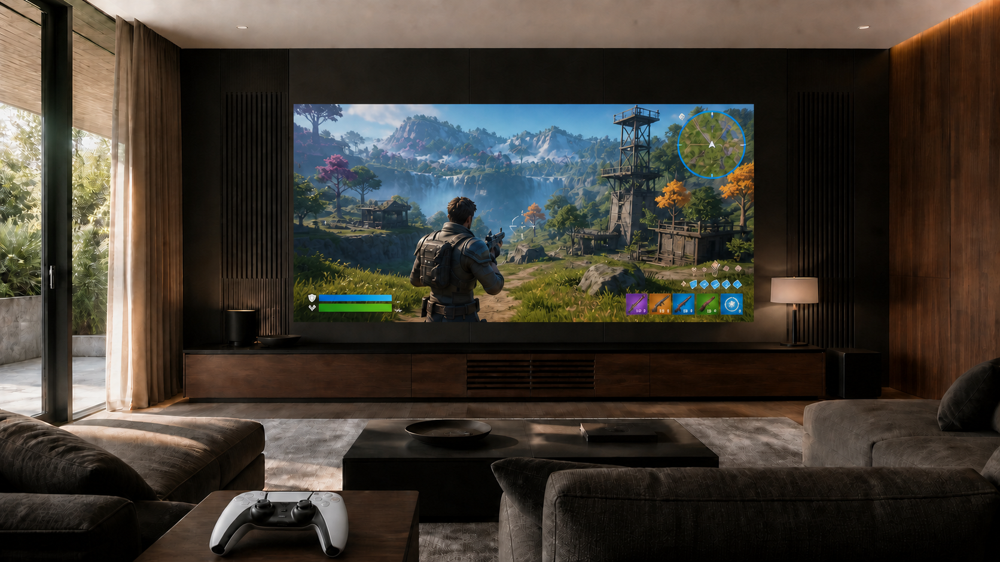

MicroLED for a Home Gaming Room
How 4K120, latency, HDR, seating, and the complete signal path shape the experience.
MicroLED can be an exceptional display for a premium home gaming room when the complete system is designed and verified for the way it will be used. The console or PC, switching, transport, processor, and wall input must preserve the selected 4K120 signal and HDR format. End-to-end latency should be measured at the installed wall rather than inferred from one component. Image size, pixel pitch, interface legibility, seating, audio, networking, and control scenes then determine whether the room feels responsive, comfortable, and easy to use.
A large display alone does not create a high-performance gaming room. Modern sources can expose every weak point between the game and the image: a switcher that falls back to 60 Hz, an extender that changes color format, a processor in the wrong mode, or a room preset that adds unnecessary processing. The design team also has to account for a very different viewing pattern than cinema. Players scan interface details, react to movement, use voice communication, and may sit closer for long sessions.
Start with the Complete 4K120 Path
Current premium gaming sources can output 4K video at 120 Hz. Sony's official PlayStation 5 guidance, for example, provides a 120 Hz output setting for compatible games and displays, while HDMI's specification overview identifies 4K120 as a supported high-refresh format. Reaching that result at the wall requires every device in between to pass the intended signal.
Changing one element can change the result. A firmware update, replacement switcher, new console, alternate rack route, or different processor preset can alter what reaches the wall. The integrator should document the accepted formats and test the owner's real sources through the installed path.
120 Hz Input and 240 Hz+ Panel Refresh Do Different Jobs
A 120 Hz source can provide up to 120 unique frames each second. Boulder's SilkStream architecture operates the full panel at 240 Hz+, giving the display at least two panel refresh intervals for each incoming frame at the maximum input rate. That additional temporal capacity supports consistent frame presentation and panel driving.
It does not turn 120 frames per second into native 240 fps or create motion information that the source never supplied. Input rate, source frame rate, full-panel refresh, per-pixel driver refresh, and scan architecture are related but different specifications. Our dedicated guide explains why a 240 Hz+ MicroLED panel still matters with a 120 Hz input.
Do not reduce gaming performance to one number
4K120 compatibility, panel refresh, latency, HDR, color format, processing, and game behavior describe different parts of the experience. A credible specification states which number belongs to which stage and verifies the assembled system.
Measure Latency End to End
Latency is the elapsed time between an input action and the visible result. The player experiences the total path, not an isolated panel specification. The console or PC, game engine, controller connection, switching, transport, processor, display input, panel drive, and network can all contribute to what feels responsive.
The useful test is performed on the completed system in the exact gaming mode the owner will use. The integrator should record the source format, processor preset, HDR state, display mode, and measurement method with the result. If cinema processing and gaming processing differ, both should be stored as deliberate room scenes rather than left as hidden menu settings.
Variable refresh rate and auto low-latency features should not be assumed merely because a source supports them. Compatibility has to be confirmed across every active device in the path. A stable fixed-rate 4K120 result is often more valuable than an unchecked list of feature acronyms.
Commission HDR for the Room, Not the Specification Sheet
HDR gaming combines high peak highlights, deep shadows, fast camera movement, and interface elements that may remain on screen for long periods. Maximum brightness is not the commissioning target. The image should preserve highlight detail without making extended play uncomfortable, while maintaining shadow visibility in the room's actual light conditions.
The source HDR adjustment, game calibration controls, video processor, wall mode, room lighting, and BlackFire display surface all affect the final result. A dedicated gaming preset may use different processing and luminance than movie night or daytime sports. The planning method in our guide to MicroLED brightness for home theater applies equally to a gaming room: measure the room, preserve headroom, and commission useful modes instead of chasing the highest number.
Plan Image Size Around Interface Legibility and Seating
Gaming adds a requirement that film viewing does not: the player must continuously read maps, health indicators, inventory, subtitles, aiming reticles, and other information distributed across the image. An extremely wide wall can be immersive, but it can also force excessive eye and head movement when the critical seat is too close.
Begin with active image width and height, the closest playing position, secondary seats, standing views, intended titles, and the size of typical interface elements. Pixel pitch should be evaluated at those actual distances. The dealer can test candidate pitches and image sizes with representative game content before construction dimensions are finalized. Our MicroLED sightline and seating guide covers the underlying geometry.
Audio, Networking, and Controls Belong in the Same Plan
A MicroLED wall is a solid display surface, so the center channel cannot sit behind it. Dialogue and team communication may come from a custom soundbar below the wall, an engineered center channel above or below the image, or another coordinated architectural solution. Speaker dispersion, seating elevation, room acoustics, and processing matter more than simply placing a speaker near the screen. See our guide to custom soundbars and center-channel planning for MicroLED walls.
Online play also depends on the residential network. The design should account for a reliable wired connection at the source, wireless coverage for companion devices, voice communication, update traffic, and equipment-rack location. Controller range should be tested from every intended seat, especially when the source is concealed in a remote rack or behind dense architectural materials.
One-touch controls should prepare the whole room. A gaming scene can select the correct source, recall the low-processing video mode, set audio and microphone levels, adjust lighting and shades, and restore a predictable starting state. Movie, sports, and art scenes can retain their own calibrated behavior.
Gaming-Room Commissioning Matrix
| System area | What should be verified | Owner-facing evidence |
|---|---|---|
| Source output | Resolution, 120 Hz mode, HDR state, color format, supported games, and firmware. | Documented source settings and representative titles tested. |
| Signal path | Switching, transport, cabling, receiver, processor, and wall input at the intended format. | Verified input status at the wall and a recorded system diagram. |
| Latency | End-to-end response in the installed gaming preset, plus any alternate room modes. | Measurement method, source format, active preset, and recorded result. |
| HDR and color | Source adjustment, processor handling, highlight detail, shadow visibility, and comfortable luminance. | Calibrated day and evening gaming modes with settings protected. |
| Image and seating | Pixel pitch, interface legibility, field of view, closest seat, secondary seats, and standing views. | Approved image dimensions and seating coordinates. |
| Audio and network | Dialogue localization, headset and microphone behavior, controller range, wired network, and wireless coverage. | Tested performance from every important playing position. |
| Control scenes | Source selection, video preset, lighting, shades, audio, and recovery after power or source changes. | Simple named scenes the owner can recall consistently. |
What the Authorized Dealer Should Deliver
The dealer's job is to turn a group of compatible products into a verified residential experience. Before owner handoff, the project should have a documented baseline that can be reproduced after service, firmware changes, or source upgrades.
- Signed image geometryActive dimensions, pixel pitch, closest seat, secondary views, and interface-legibility review.
- Complete signal drawingEvery switcher, receiver, extender, cable route, processor, and input in the 4K120 path.
- Measured gaming modeThe actual end-to-end latency result with source format and active settings recorded.
- Calibrated room modesSeparate gaming, cinema, sports, and daytime behavior where the room requires them.
- Audio and network verificationDialogue, voice chat, controller range, wired performance, and wireless coverage from the seats.
- Owner handoffSimple controls, protected settings, service documentation, and a repeatable acceptance baseline.
Primary Technical References
- PlayStation: PS5 4K resolution, HDR, VRR, and 120 Hz output settings
- HDMI Licensing Administrator: HDMI Specification overview and 4K120 formats
- Opal Screens: MicroLED video processing and signal-chain planning
Plan the Gaming Room as One System
Your authorized Opal dealer can coordinate the wall, 4K120 signal path, measured latency, HDR modes, seating, audio, networking, controls, and commissioning before construction decisions close.
Contact an Authorized Dealer